2026
Çelik Y., Tagliasacchi E., Taş M. A., Polat P. · Türkiye Jeoloji Bülteni, 69(4), 159–190 · ESCI, TR Dizin · DOI: 10.25288/tjb.1800081
Erzincan Binali Yıldırım Üniversitesi · Fen-Edebiyat Fakültesi · Coğrafya Bölümü (CBS)
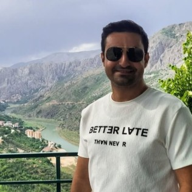
Saha verilerini İHA fotogrametrisiyle yüksek çözünürlüklü, ölçülebilir 3B arazi modellerine dönüştürüyorum.
Coğrafi Bilgi Sistemleri (CBS) ve uzaktan algılama tabanlı fiziki ve beşeri coğrafya araştırmaları yürütüyorum. Başlıca çalışma konularım: doğal afet duyarlılık analizleri (heyelan ve taşkın; AHP / Frekans Oranı yöntemleri), arazi kullanımı ve ekosistem değişimi, göl seviyesi ile orman örtüsü değişimlerinin uydu görüntüleriyle (Landsat, Sentinel) izlenmesi, jeomorfoloji ve jeolojik–kültürel miras (travertenler). Saha verilerini drone fotogrametrisi (Agisoft Metashape) ile yüksek çözünürlüklü 3B model, ortofoto ve sayısal yükseklik modeline (DEM) dönüştürüyorum.
Bilgiler ve fotoğraf AVESİS profilinden alındı.
CBSUzaktan AlgılamaDoğal AfetlerHeyelanTaşkınJeomorfolojiFotogrametriTürkiye Coğrafyası
Erzincan'ın jeolojik ve kültürel mirası üzerine uluslararası çalıştay — düzenleme kurulunda görevli.
Erzincan Binali Yıldırım Üniversitesi · "Milyonlarca yıllık jeolojik mirası keşfet"
Erzincan bölgesinin jeolojik ve kültürel mirası: travertenler, volkanik yapılar, jeomorfoloji, tarihi mimari ve kültürel koruma. EBYÜ ev sahipliğinde; MTA, UNESCO Türkiye Millî Komisyonu ve jeoloji/coğrafya derneklerinin desteğiyle, dört oturum ve teknik arazi gezileriyle uluslararası katılımlı çalıştay.
Fotogrametri (Agisoft Metashape) ile üretilmiş, web'de interaktif arazi modelleri. Döndür, yakınlaş, gerçek metre ile ölç.
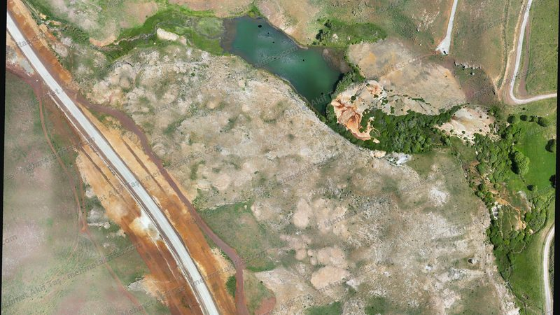
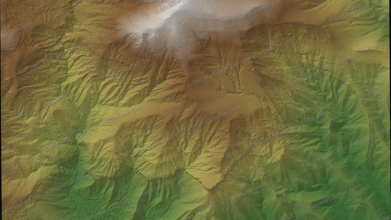
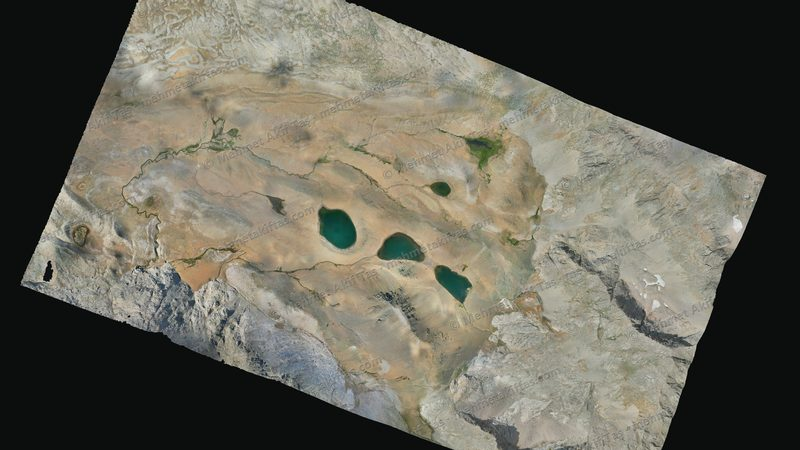
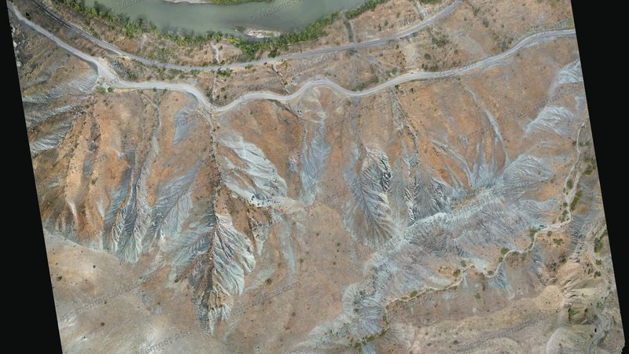
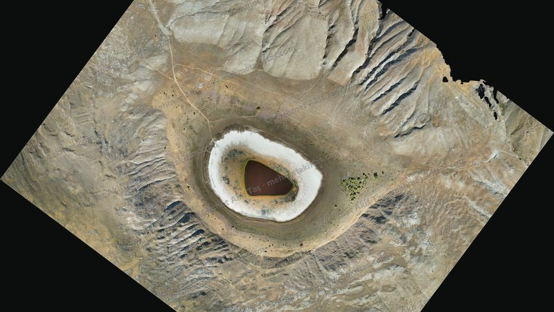
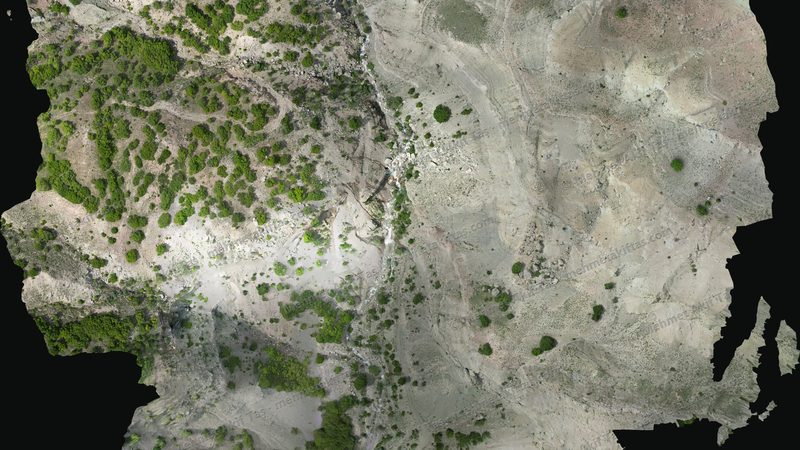
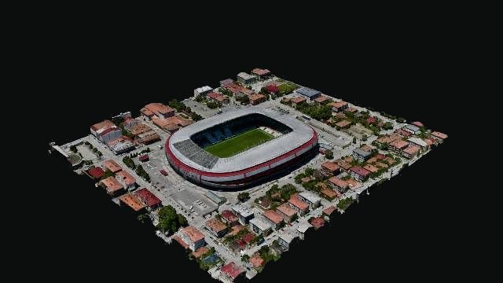
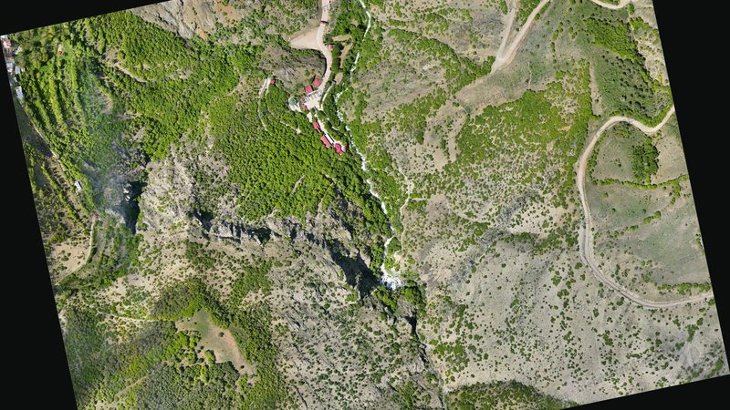
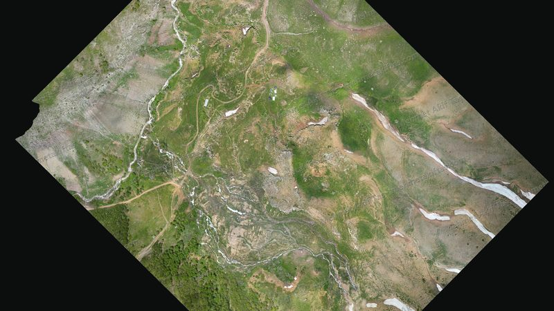
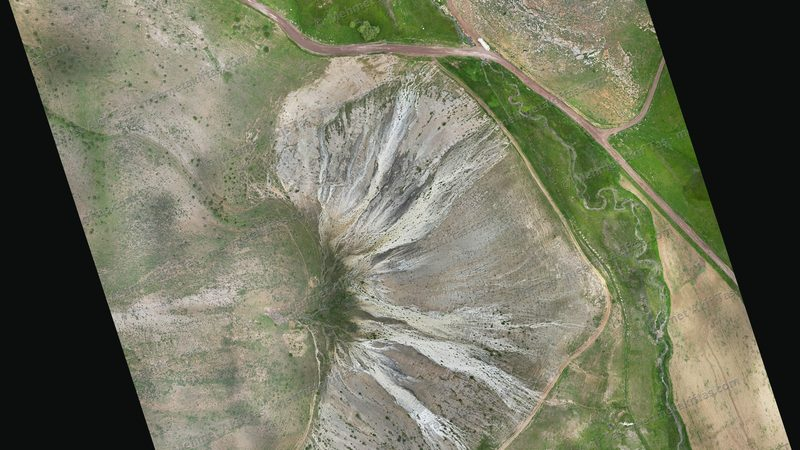
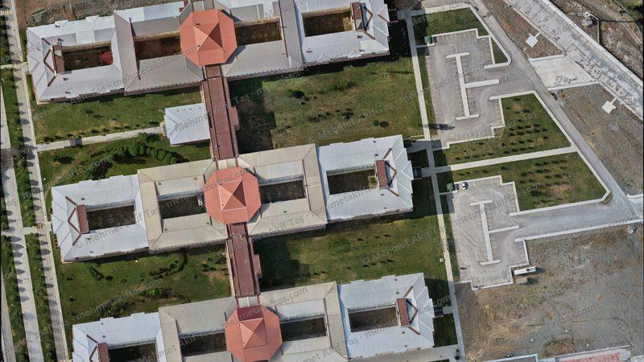
Her modelin kapsadığı alan (çerçeve) ve konumu (Erzincan ve Gümüşhane). Sağ üstten uydu (etiketli) / yol / sokak altlığını seçebilirsin; çerçeveye veya pin’e tıkla → 3B modele git.
Seçili makaleler. Başlığa tıklayınca makale DOI bağlantısıyla açılır.
AVESİS ve Google Scholar atıf metrikleri (elle güncellenir); OpenAlex verisi canlı olarak çekilir.
| Kaynak | Atıf | h-index |
|---|---|---|
| Web of Science | 16 | 1 |
| Scopus | 2 | 1 |
| TR Dizin | 24 | 4 |
| Sobiad | 19 | 3 |
| Diğer kaynaklar | 60 | – |
| Google Scholar | 62 | 4 |
Kaynak: AVESİS ve Google Scholar (son güncelleme: 11.11.2026). Toplam atıf, AVESİS'in bildirdiği sayıdır. Google Scholar i10-index: 2.
AVESİS · Google Scholar · OpenAlex (canlı): – atıf · h-index –
Katkı sunduğum bilimsel araştırma projeleri (kaynak: AVESİS).
Yeni danışmanlıklar tamamlandıkça eklenecek.